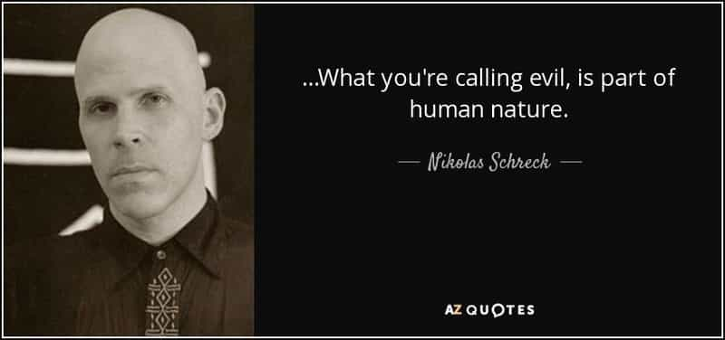

Edgar Tru is a Southern-based objectivist, natural-minded contrarian, and eleutheromania. Follow me on Gab.


Human nature. It’s important. It’s how I’ve come to realize there are serious political and cultural snowball effects when a decision is agreed upon and implemented within society. After gay marriage was legalized, it wasn’t any time shortly after that you could be casted as a bigot for not supporting children who desired to attempt transitioning into the opposite sex. It can at least be observed a specific timeframe and the political on-goings which shortly led toward that sickening direction.
Same with feminism and female’s rights to vote. Now it’s considered socially acceptable and admirable that females be field cops and serve on the frontlines of war. There are political and cultural snowball effects to every single decision. It’s human nature at play. Why else does the mouse ask for a glass of milk? Because you gave him a cookie. Why is the little punk now staying at your house rent free? It started with a single cookie.
This may get controversial, and a lot of assumptions may be made. But I’m about to divulge things I’m not sure I’ve ever heard anyone else really talk about or write about. I’m about to divulge some thoughts, which some may be construed as outright negative, about the Founding Fathers.

The Founding Fathers are deified and glorified far too much. I believe their biggest flaw was believing a society, bound by ‘independence’ and ‘freedom,’ could honestly sustain itself for very long.
America is dying. She most likely will not survive another 100-200 years, if that. President Trump may halter the impending doom, but that’s all it may amount to. Nothing more than a temporary halt on the hell which awaits America. Radical individualism, egoism and a full-fledged capitalist mindset are, what I believe, led us here in 2018 America.
Now, I’m not suggesting I’ve turned full-fledged socialist, but from my observations, in accordance with human nature, capitalism cannot manifest in a real society and last very long. Neither can anarchy, libertarianism or communism. They all fly in the face of Nature and how She demands we operate.
Law and order must be maintained by some sense of force. Ragnar Redbeard himself wrote that there is the man who rules, and who is ruled over. That’s paraphrasing but accurate in representing his point. In nature there are rules and, if not followed, they become original sin sand eventually destroy society by crushing the latter generations.
The big beef with Britain was taxation without representation, right? Well, I look around and I do not feel very represented. Hell, a percentage of my tax dollars go toward universities who’d legally discriminate against me due to merely being European-American. My tax dollars are being injected into socialist programs which I do not benefit from while border jumpers cash in on free meals. Taxation without representation much?
I most certainly understand the Founding Fathers aggression toward Britain. If I was in their shoes, I’d probably said fuck it and waged war. It’s understandable. But, to the contrary, what did they really accomplish? Many of the folks did not want war. A minority of men – I’ve heard it estimated around only 10% – wanted to throw their fist in the air and play little revolutionary. If I know anything about revolutionaries, they get a lot of people killed. On both sides.
The term ‘radical,’ in this sense, is obviously propaganda, as what is deemed ‘radical’ is in the eye of the beholder. What’s the difference between a terrorist and a freedom fighter? Depends on your level of power and/or position. It’s that simple. But, to get a tad ‘radical’ here, the Founding Fathers were terrorists by its given definition. They used both aggression and violence for a political purpose. And, again, what did they really accomplish?
Law and order are part of the animal kingdom. The human animal is only exempt due to the fact we seem to possess the ability to defy Nature and Her orders. But that defiance has severe comeuppances.
I cannot help but come back to this view that capitalism has its place for scrutiny just like communism, anarchy or libertarianism. They all four seem to believe humans can naturally work together and, for all of time, be peaceful amongst ourselves. Religion, race and differences in political ideologies have damn well made it clear that just isn’t the case. And, this I swear to you, never will be. Not ever.
Radical individualism sounds rad on the surface, sure. Myself, I do not like even walking or sitting in groups. I do not care to join the herd and march to the beat of your drum. It goes against my nature. But my intellectual side recognizes this more-so as a flaw and not a compliment. Then again, it depends on the productivity of the herd versus the destructivity of the herd.
The Founding Fathers could perhaps be, at least somewhat, categorized as anarchist, libertarians or conservatives. There are differences between these terms, sure. But self-governing seemed part of their gig. Self-governing, as I see it, is authentic conservatism, along with traditional roles, in the Western sense, between men and women. Being part of the Republican Party does not equate to authentic conservatism, in my view. You could be liberal as hell (as I’m sure many are) and be part of that damned party.
The conservative aims to be left alone and doesn’t tread on others. If your neighbor two blocks over has ten abortions every two years, the authentic conservative doesn’t care. As long as you don’t come stomping on their grass and banging on their door, why bother?
I believe it is the liberal mindset which aims to spread its ideology and ‘tolerance’ through force of government. An authentic conservative wants little government as possible. See where I’m going with this? An authentic conservative mentality ultimately gets destroyed because it bucks up against human nature by advocating for individualism on a highly irresponsible level. So, how does one achieve an actual conservative society?
By means of government. My intellectual side sees such flaw in attempting to limit government. It isn’t going away. Not ever. There will always be men who rule, and who are ruled over. Accept this hard fact. Now, that doesn’t mean one is liberal because they utilize government to enforce their beliefs or ethics, but it does suggest authentic conservatism is just as absurd as, to reiterate yet again, the likes of communism or libertarianism or anarchy. I firmly believe it cannot work.
These are just my thoughts. I’ve chewed them over for many hours on end. In truth, humans will always kill other humans. But I do believe some systems last far longer than others. I wish well we could all be bloody humanitarians and just be peaceful little angels. We are not. We are ruthless, we are vicious, we are animal.
Nature is watching. Find a way to adhere to Her, or perish.
Read Next: Ted Kaczynski’s Manifesto Predicted The Catastrophe From Technology And Liberalism